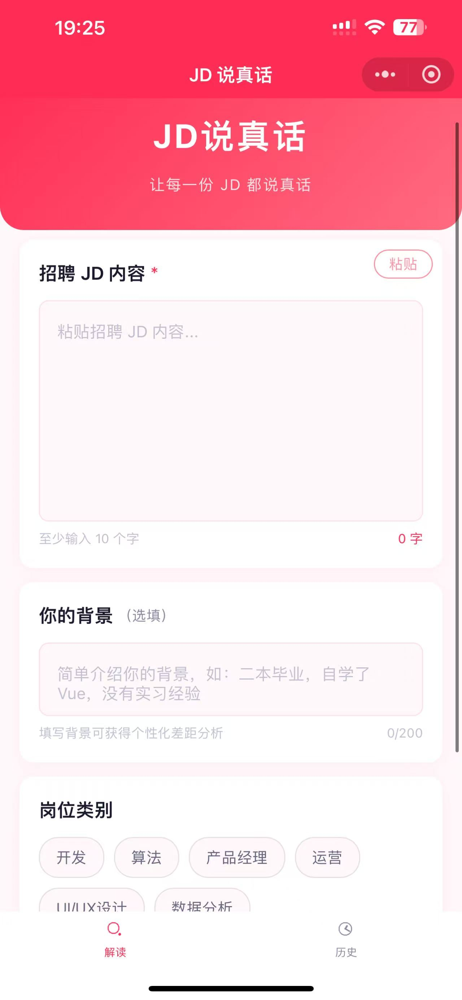
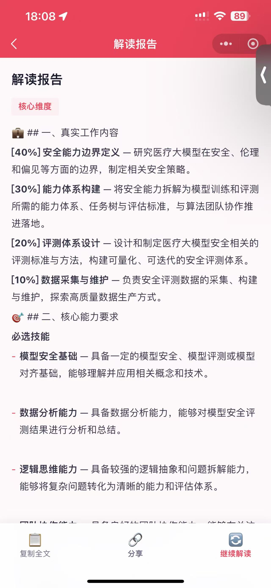
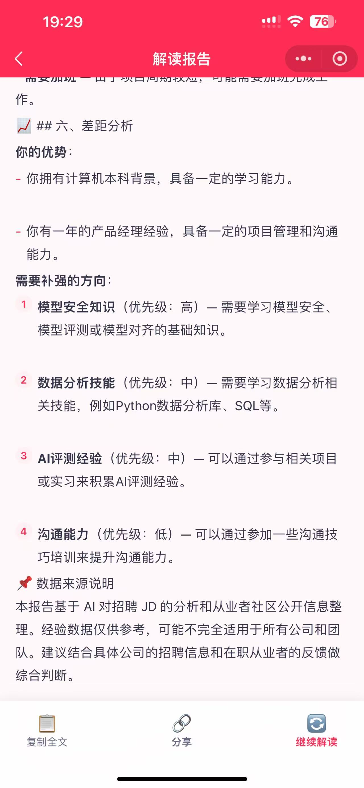
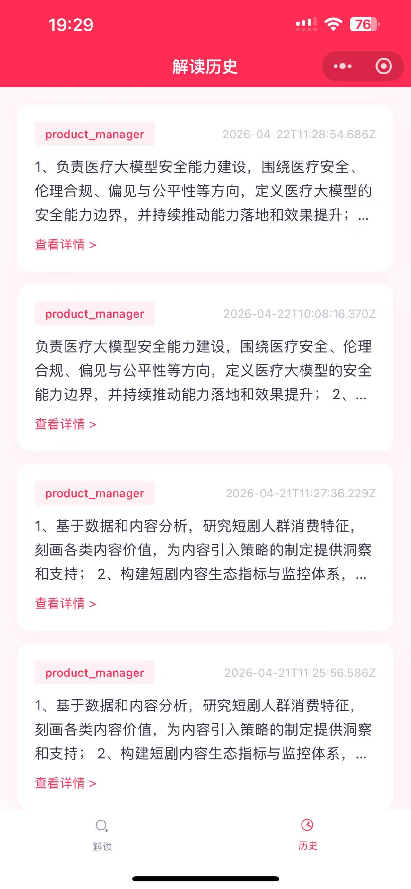

用 AI + 真实从业者经验，将招聘黑话翻译为求职者能看懂的结构化报告。不是简历优化，不是面试模拟——解决求职链路最上游的信息不对称。
毕业 0-2 年的求职者在 BOSS 直聘看到感兴趣的岗位，却面临三个核心困惑。
"负责产品全生命周期管理"实际可能就是写需求文档 + 画原型。招聘方用高大上的话包装，求职者根本看不懂。
"熟悉 React 全家桶"到底什么水平？自己的 Vue 经验算不算？差距有多大？没人告诉你。
不知道学什么、做项目还是刷题、补多久才能达到要求。信息不对称导致自我淘汰。
粘贴 JD → 选择岗位类别 → 可选填背景 → 获得包含 6 个维度的深度报告。
原生开发，玫红色系 UI，3 个页面覆盖完整用户流程。




作为 AI PM 方向的求职者，用 SOLO（AI 编程助手）从零完成整个项目，展示 AI 辅助产品开发的完整能力。
没有写一行代码之前，先用 SOLO 完成产品定义——验证需求是否存在、竞品怎么做、目标用户是谁。
AI 解读 JD 的质量取决于注入的"真实经验"质量。直接让 AI 生成经验会得到泛化描述，缺乏具体信息。
Prompt 是产品的"大脑"，需要反复迭代才能达到可用质量。4 个版本，每个版本解决一个核心问题。